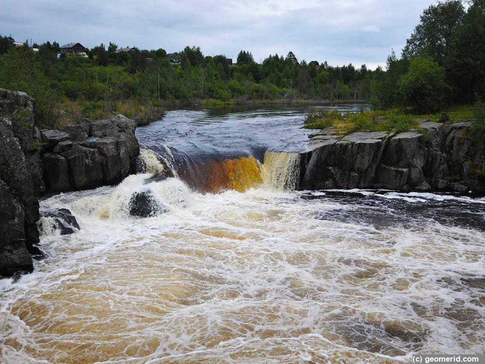

Водопад Воицкий Падун
Воицкий водопад на реке Нижний Выг (иногда его называют Воицкий Падун) является одним из самых красивых водопадов Карелии. Он не такой мощный, как Водопад Кивач, но до строительства Беломорканала, в 20 веке, его мощь была существенно большей. Путешествуя по Карелии по трассе Кола, нужно сделать краткую остановку в городе Надвоицы, чтобы увидеть бурлящий водопад с цветом воды, похожим на Кока-Колу. Впрочем, этот цвет воды можно видеть во всех реках и озерах Карелии. Однако в водопаде подобный цвет воды выглядит особенно эффектно.